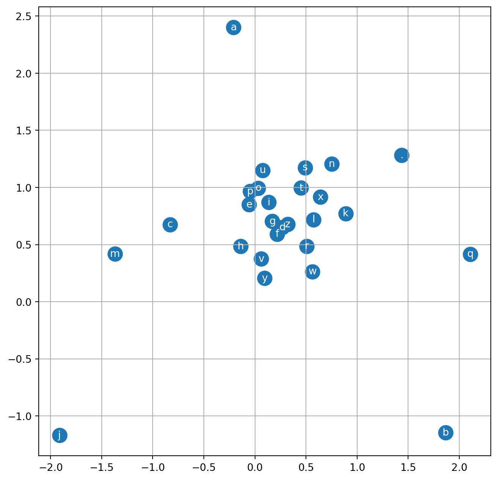

This is my study notes / codes along with Andrej Karpathy’s “Neural Networks: Zero to Hero” series.
Edit 1st June, 25: I changed the loop to 5k only, for the shake of time saving when re-rendering this post!
In the previous lecture, we built a simple bigram character-level language model, using 2 different approaches that are (1) count, and (2) 1 layer neural network. They produced the same (and both poor - since the context is 1 character only) result but the neural network option offers more flexibility so that we can complexify our model to get better performance.
In this lecture we are going to implement 20-years ago neural probabilistic language model by Bengio et al. (2003).
PART 1: intro to MLP
Bengio et al. 2003 (MLP language model) paper walkthrough
Summary
Problem Statement:
- Traditional n-gram language models suffer from the curse of dimensionality: they can’t effectively generalize to word sequences not seen in training data;
- The core issue is treating words as atomic units with no inherent similarity to each other;
- For example, if we’ve seen “dog is eating” in training but never “cat is eating”, n-gram models can’t leverage the similarity between “dog” and “cat”;
- This leads to poor probability estimates for rare or unseen word sequences.
Solution:
- Learn a distributed representation (embedding) for each word in a continuous vector space where similar words are close to each other;
- Use a neural network architecture with:
- Input layer: concatenated embeddings of n-1 previous words;
- Hidden layer: dense neural network with
tanhactivation; - Output layer: softmax over entire vocabulary to predict next word probability.
The model simultaneously learns:
- Word feature vectors (embeddings) that capture semantic/syntactic word similarities;
- Neural network parameters that combine these features to estimate probability distributions.
Key advantages:
- Words with similar meanings get similar feature vectors, enabling better generalization;
- The probability function is smooth with respect to word embeddings, so similar words yield similar predictions;
- Can generalize to unseen sequences by leveraging learned word similarities.
Methodology:
Traditional Problem:
- In n-gram models, each word sequence of length n is a separate parameter;
- For vocabulary size \(|V|\), need \(|V|^n\) parameters;
- Most sequences never appear in training, leading to poor generalization;
Solution via Distributed Representation:
- Each word mapped to a dense vector in \(R^m\) (typically m=50-100);
- Similar words get similar vectors through training;
- Probability function is smooth w.r.t these vectors;
- Key benefit: If “dog” and “cat” have similar vectors, model can generalize from “dog is eating” to “cat is eating”;
- Number of parameters reduces to \(O(|V|×m + m×h + h×|V|)\), where \(h\) is hidden layer size;
- This is much smaller than \(|V|^n\) and allows better generalization;
Neural architecture:
Input Layer:
- Takes \(n-1\) previous words (context window);
- Each word i mapped to vector \(C(i) ∈ R^m\) via lookup table;
- Concatenates these vectors: \(x = [C(wₜ₋ₙ₊₁), ..., C(wₜ₋₁)]\);
- \(x\) dimension is \((n-1)×m\);
Hidden Layer:
- Dense layer with tanh activation;
- Computation: \(h = tanh(d + Hx)\);
- \(H\) is weight matrix, \(d\) is bias vector;
- Maps concatenated context to hidden representation;
Output Layer:
- Computes probability distribution over all words;
- \(y = b + Wx + Uh\);
- Softmax activation: \(P(wₜ|context) = exp(yᵢ)/Σⱼexp(yⱼ)\);
- \(W\) provides “shortcut” connections from input to output;
- Direct connection helps learn simpler patterns;
Training:
- Maximizes log-likelihood of training data;
- Uses stochastic gradient descent;
- Learns both word vectors \(C(i)\) and neural network parameters \((H, d, W, U, b)\);
- Word vectors capture similarities as they help predict similar contexts;
- Can initialize word vectors randomly or with pretrained vectors.

(re-)building our training dataset
Loading library, reading data, building dictionary:
Show the code
['emma', 'olivia', 'ava', 'isabella', 'sophia', 'charlotte', 'mia', 'amelia']Show the code
{1: 'a',
2: 'b',
3: 'c',
4: 'd',
5: 'e',
6: 'f',
7: 'g',
8: 'h',
9: 'i',
10: 'j',
11: 'k',
12: 'l',
13: 'm',
14: 'n',
15: 'o',
16: 'p',
17: 'q',
18: 'r',
19: 's',
20: 't',
21: 'u',
22: 'v',
23: 'w',
24: 'x',
25: 'y',
26: 'z',
0: '.'}Building the dataset:
Show the code
block_size = 3 # the context length: how many characters do we take to predict the next one?
X, Y = [], []
for w in words[:5]:
print(w)
context = [0] * block_size # 0 so context will be padded by '.'
for ch in w + '.':
ix = stoi[ch]
X.append(context)
Y.append(ix)
print(''.join(itos[i] for i in context), '----->', itos[ix] )
context = context[1:] + [ix] # rolling to the next one
X = torch.tensor(X)
Y = torch.tensor(Y)emma
... -----> e
..e -----> m
.em -----> m
emm -----> a
mma -----> .
olivia
... -----> o
..o -----> l
.ol -----> i
oli -----> v
liv -----> i
ivi -----> a
via -----> .
ava
... -----> a
..a -----> v
.av -----> a
ava -----> .
isabella
... -----> i
..i -----> s
.is -----> a
isa -----> b
sab -----> e
abe -----> l
bel -----> l
ell -----> a
lla -----> .
sophia
... -----> s
..s -----> o
.so -----> p
sop -----> h
oph -----> i
phi -----> a
hia -----> .implementing the embedding lookup table
In the paper they cram 17k word into as-low-as-possible 30 dimensions space, for our data, we just cram words into 2D space.
We can access the element of torch.tensor by:
Show the code
tensor([0.8894, 1.9139])…but in this lecture accessing by C[5] would be sufficient. We can even access using a more than 1 dimension tensor:
Show the code
torch.Size([32, 3, 2])
tensor(1)
tensor([ 0.3933, -0.0305])
tensor([ 0.3933, -0.0305])PyTorch is great for embedding words:
We’ve compeleted the first layer with context and lookup table!
implementing the output layer
In Deep Learning, people use logits for what raw output that range from negative inf to positive inf.
Now we need to exponentiate it and get the probability.
Every row of probs has sum of 1.
And this is the probs of each ground true Y in current output of the neural nets:
tensor([4.7061e-24, 3.7041e-35, 4.8793e-07, 7.2092e-24, 3.7791e-13, 1.0648e-35,
6.9894e-13, 3.9922e-36, 5.4665e-26, 4.1032e-37, 1.1009e-11, 1.6808e-12,
3.1990e-13, 1.2050e-29, 3.0691e-12, 7.4121e-09, 1.7415e-12, 5.6369e-30,
1.2058e-32, 6.7942e-15, 1.8272e-36, 2.1324e-16, 0.0000e+00, 9.5874e-30,
8.1249e-17, 1.0161e-18, 0.0000e+00, 3.1831e-13, 0.0000e+00, 6.8864e-19,
2.5463e-16, 5.0601e-13])Result is not good as we’ve not trained the network yet!
implementing the negative log likelihood loss
We define the negative log likelihood as:
summary of the full network
Dataset:
Neural network layers:
Size of the network:
Constructing forward pass:
PART 2: intro to many basics of machine learning
introducing F.cross_entropy and why
We re-define loss:
Why?
- Pytorch will create more intermediate tensor for every assignment:
counts,probs-> more memory; - Backward pass will be more optimized, because the expressions are much analytically and mathematically interpreted;
- Cross entropy can be significantly & numerically well behaved (for eg when we exponentiate a large positive number we got inf, PyTorch cross entropy will calculate the max of set and subtract it - which will not impact the exp result)
implementing the training loop, overfitting one batch
So the forward pass, backward pass, and update loop will be implemented as below:
Show the code
for _ in range(10):
# forward pass:
emb = C[X] # (32, 3, 2)
h = torch.tanh(emb.view(-1, 6) @ W1 + b1) # (32, 100)
logits = h @ W2 + b2 # (32, 27)
loss = F.cross_entropy(logits, Y)
print(loss.item())
# backward pass:
for p in parameters:
p.grad = None
loss.backward()
# update
for p in parameters:
p.data += -0.1 * p.grad
print(loss.item())17.76971435546875
13.656400680541992
11.298768997192383
9.452457427978516
7.984262466430664
6.891322135925293
6.100014686584473
5.452037334442139
4.8981523513793945
4.414664268493652
4.414664268493652We are fitting 32 examples to a neural nets of 3481 params, so it’s super easy to be overfitting. We got a low final loss, but it would never be 0, because the output can varry for the same input, for eg, ....
torch.return_types.max(
values=tensor([10.7865, 12.2558, 17.3982, 13.2739, 10.6965, 10.7865, 9.5145, 9.0495,
14.0280, 11.8378, 9.9038, 15.4187, 10.7865, 10.1476, 9.8372, 11.7660,
10.7865, 10.0029, 9.2940, 9.6824, 11.4241, 9.4885, 8.1164, 9.5176,
12.6383, 10.7865, 10.6021, 11.0822, 6.3617, 17.3157, 12.4544, 8.1669],
grad_fn=<MaxBackward0>),
indices=tensor([ 1, 8, 9, 0, 15, 1, 17, 2, 9, 9, 2, 0, 1, 15, 1, 0, 1, 19,
1, 1, 16, 10, 26, 9, 0, 1, 15, 16, 3, 9, 19, 1]))training on the full dataset, minibatches
We can deploy our code to all the dataset, un-fold the below code block to see full code.
Show the code
block_size = 3
X, Y = [], []
# Dataset
for w in words:
# print(w)
context = [0] * block_size
for ch in w + '.':
ix = stoi[ch]
X.append(context)
Y.append(ix)
# print(''.join(itos[i] for i in context), '----->', itos[ix] )
context = context[1:] + [ix] # rolling to the next one
# Input and ground true
X = torch.tensor(X)
Y = torch.tensor(Y)
print("Data size", X.shape, Y.shape)
# Lookup table
g = torch.Generator().manual_seed(2147483647)
C = torch.randn((27, 2), generator=g)
emb = C[X] # (32, 3, 2)
# Layer 1 - tanh
W1 = torch.randn((6, 100), generator=g)
b1 = torch.randn(100, generator=g)
h = torch.tanh(emb.view(-1, 6) @ W1 + b1) # (32, 100)
# Layer 2 - softmax
W2 = torch.randn((100, 27), generator=g)
b2 = torch.randn(27, generator=g)
logits = h @ W2 + b2 # (32, 27)
loss = F.cross_entropy(logits, Y)
# All params
parameters = [C, W1, b1, W2, b2]
print("No of params: ", sum(p.nelement() for p in parameters))
# Pre-training
for p in parameters:
p.requires_grad = TrueData size torch.Size([228146, 3]) torch.Size([228146])
No of params: 3481We notice that it takes a bit long time for each training in the loop. In practice, we will perform the forward/backward passes and update parameters for a small batch of the dataset. The minibatch construction is added/modified for lines of code with #👈.
Read more: https://nttuan8.com/bai-10-cac-ky-thuat-co-ban-trong-deep-learning/
Show the code
# Training
for _ in range(10000):
# minibatch construct #👈
ix = torch.randint(0, X.shape[0], (32,)) #👈
# forward pass:
emb = C[X[ix]] # (32, 3, 2) #👈
h = torch.tanh(emb.view(-1, 6) @ W1 + b1) # (32, 100)
logits = h @ W2 + b2 # (32, 27)
loss = F.cross_entropy(logits, Y[ix]) #👈
if _ >= 9990: print(f"___after running {_} time: ", loss.item())
# backward pass:
for p in parameters:
p.grad = None
loss.backward()
# update
for p in parameters:
p.data += -0.1 * p.grad
print("final minibatch loss: ", loss.item())___after running 9990 time: 2.3651716709136963
___after running 9991 time: 2.547208786010742
___after running 9992 time: 2.886200189590454
___after running 9993 time: 2.6920998096466064
___after running 9994 time: 2.448667526245117
___after running 9995 time: 2.080944299697876
___after running 9996 time: 2.4017341136932373
___after running 9997 time: 2.379610061645508
___after running 9998 time: 2.3751413822174072
___after running 9999 time: 2.551131010055542
final minibatch loss: 2.551131010055542The loss decrease much much better, although the direction of gradient might be not correct direction. But it is good enough for an approximation. Notice the loss for a minibatch is not the loss of whole dataset.
Show the code
2.4879841804504395We archived 2.39 loss for final minibatch and 2.5 on overall network.
finding a good initial learning rate
Now we’re continuing the optimization, let’s focus on how much we update the data from the gradient p.data += -0.1 * p.grad. We do not know if we step too little or too much.
We can create 1000 learning rates to use along with the training loop and see which one offers more stable convergence.
Reset the code:
Show the code
block_size = 3
X, Y = [], []
# Dataset
for w in words:
# print(w)
context = [0] * block_size
for ch in w + '.':
ix = stoi[ch]
X.append(context)
Y.append(ix)
# print(''.join(itos[i] for i in context), '----->', itos[ix] )
context = context[1:] + [ix] # rolling to the next one
# Input and ground true
X = torch.tensor(X)
Y = torch.tensor(Y)
print("Data size", X.shape, Y.shape)
# Lookup table
g = torch.Generator().manual_seed(2147483647)
C = torch.randn((27, 2), generator=g)
emb = C[X] # (32, 3, 2)
# Layer 1 - tanh
W1 = torch.randn((6, 100), generator=g)
b1 = torch.randn(100, generator=g)
h = torch.tanh(emb.view(-1, 6) @ W1 + b1) # (32, 100)
# Layer 2 - softmax
W2 = torch.randn((100, 27), generator=g)
b2 = torch.randn(27, generator=g)
logits = h @ W2 + b2 # (32, 27)
loss = F.cross_entropy(logits, Y)
# All params
parameters = [C, W1, b1, W2, b2]
print("No of params: ", sum(p.nelement() for p in parameters))
# Pre-training
for p in parameters:
p.requires_grad = TrueData size torch.Size([228146, 3]) torch.Size([228146])
No of params: 3481Training and tracking stats:
Show the code
lri = []
lossi = []
for i in range(1000):
# minibatch construct
ix = torch.randint(0, X.shape[0], (32,))
# forward pass:
emb = C[X[ix]] # (32, 3, 2)
h = torch.tanh(emb.view(-1, 6) @ W1 + b1) # (32, 100)
logits = h @ W2 + b2 # (32, 27)
loss = F.cross_entropy(logits, Y[ix])
# backward pass:
for p in parameters:
p.grad = None
loss.backward()
# update
lr = lrs[i]
for p in parameters:
p.data += - lr * p.grad
# track stats
lri.append(lre[i])
lossi.append(loss.item())
loss.item()9.962945938110352Plotting, we see a good exponential element of learning rate turn out to be around -1.
\(10^{-1}\) is 0.1 so our initial guess seems good.
splitting up the dataset into train/val/test splits and why
Now we can keep lengthening the training loop to continue decreasing loss. We can try some techniques like change the learning rate to 0.001 after 20k, 30k loops of training with 0.1.
But it will come to be overfitting when we try to keep training or increase the size of network to achieve a lower loss. The model just memorizing our training set verbatim, so if we try to sample from the model it just gives us the same thing in the dataset. Or if we calculate the loss on another dataset, it might be very high.
So another industry standard is we will split the data set into 3 pieces: (1) training set; (2) dev/validation set; and (3) test set, they can be 80% - 10% - 10% roughly and respectively.
- Training split: train the parameters;
- Dev/validation split: train the hyperparamerters (size of hidden layer, size of embedding, streng of regularization, etc);
- Test split: evaluate the performance of the model at the end, we only work on this a very very few times, otherwise we learn from it and repeat overfitting.
We are going to implement this train/dev/test splits:
Show the code
# build the dataset
def buid_dataset(words):
block_size = 3
X, Y = [], []
for w in words:
context = [0] * block_size
for ch in w + '.':
ix = stoi[ch]
X.append(context)
Y.append(ix)
context = context[1:] + [ix]
X = torch.tensor(X)
Y = torch.tensor(Y)
print(X.shape, Y.shape)
return X, Y
import random
random.seed(42)
random.shuffle(words)
n1 = int(0.8 * len(words))
n2 = int(0.9 * len(words))
Xtr, Ytr = buid_dataset(words[:n1])
Xdev, Ydev = buid_dataset(words[n1:n2])
Xte, Yte = buid_dataset(words[n2:])torch.Size([182625, 3]) torch.Size([182625])
torch.Size([22655, 3]) torch.Size([22655])
torch.Size([22866, 3]) torch.Size([22866])Now we’re already to train on splits of the dataset, but let’s hold on as we are talking abount overfitting. As discussed, overfitting also come from using a complex (too many parameters) for a small data set.
Our dataset has roughly 228k records, while the size of network is only 3.4k. So we are still underfitting, let’s continue to complexify our neural networks.
2 things to consider here:
- the size of tanh - hidden layer; and
- dimensions of embedding space.
visualizing the loss, character embeddings
First we want to see: - how the loss decrease with 200k training loop with current network setting, learning rate decay to 0.01 after first 100k; and - how the current character embeddings recognize the similarity between characters in (2D) space.
Training on the Xtr, Ytr:
Show the code
# Lookup table
g = torch.Generator().manual_seed(2147483647)
C = torch.randn((27, 2), generator=g)
# Layer 1 - tanh
W1 = torch.randn((6, 100), generator=g)
b1 = torch.randn(100, generator=g)
# Layer 2 - softmax
W2 = torch.randn((100, 27), generator=g)
b2 = torch.randn(27, generator=g)
# All params
parameters = [C, W1, b1, W2, b2]
print("No of params: ", sum(p.nelement() for p in parameters))
# Pre-training
for p in parameters:
p.requires_grad = True
# Stats holders
lossi = []
stepi = []
# Training on Xtr, Ytr
for i in range(5_000): #200_000
# minibatch construct
ix = torch.randint(0, Xtr.shape[0], (32,)) #👈
# forward pass:
emb = C[Xtr[ix]] # (32, 3, 2) #👈
h = torch.tanh(emb.view(-1, 6) @ W1 + b1) # (32, 100)
logits = h @ W2 + b2 # (32, 27)
loss = F.cross_entropy(logits, Ytr[ix]) #👈
# backward pass:
for p in parameters:
p.grad = None
loss.backward()
# update
lr = 0.1 if i <= 100_000 else 0.01 #👈
for p in parameters:
p.data += - lr * p.grad
# track stats
lossi.append(loss.item())
stepi.append(i)
print("Loss on minibatch: ", loss.item())No of params: 3481
Loss on minibatch: 2.652956485748291Loss on whole training dataset:
Show the code
2.5263497829437256Loss on dev/validation dataset, it’s not much different from loss on training as the model is still underfitting, it still generalizes thing:
Show the code
2.520705461502075Visualizing loss, we can see the loss shaking significantly as the batch size still small - 32.
Visualizing the character embeddings, we can see the model can cluster for eg. vowels a, e, i, o, u.
summary of our final code, conclusion
Show the code

We can see the loss on validation set and test set are quite similar as we are not try different scenarios to calibrate/tune hyperparamters much. So they both have the same suprise to the model training by Xtr.
We still have rooms for improvement!
sampling from the model
But our networks now can generate more name-like name!
Show the code
g = torch.Generator().manual_seed(2147483647 + 10)
for _ in range(20):
out = []
context = [0] * block_size # initialize with all ...
while True:
emb = C[torch.tensor([context])] # (1,block_size,d)
h = torch.tanh(emb.view(1, -1) @ W1 + b1)
logits = h @ W2 + b2
probs = F.softmax(logits, dim=1)
ix = torch.multinomial(probs, num_samples=1, generator=g).item()
context = context[1:] + [ix]
out.append(ix)
if ix == 0:
break
print(''.join(itos[i] for i in out))dra.
aisya.
zhyes.
ddyn.
kai.
eavin.
dadra.
kai.
chadielie.
sailiea.
daeis.
doanaileatzivila.
adi.
sadhersahiah.
saila.
rajayslen.
kula.
uyr.
yada.
kyryle.google collab (new!!) notebook advertisement
Colab link: https://colab.research.google.com/drive/1YIfmkftLrz6MPTOO9Vwqrop2Q5llHIGK?usp=sharing
Thanks Andrej!